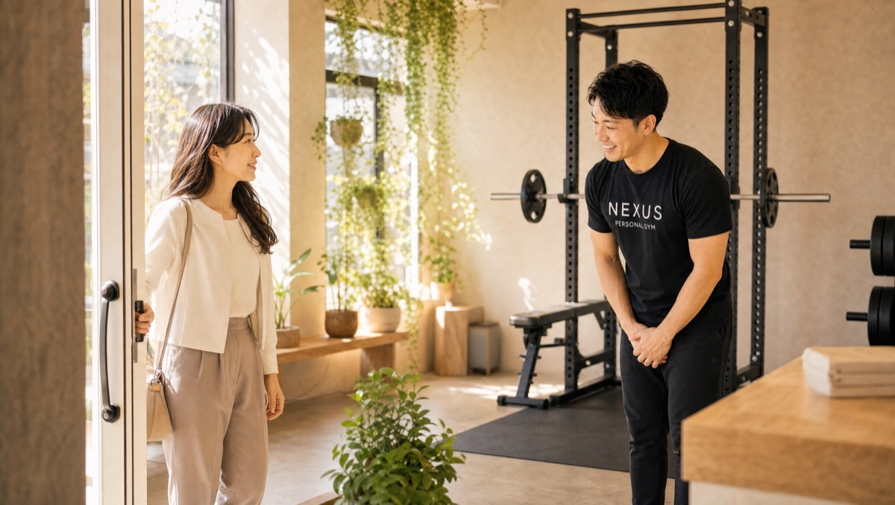

NEXUS Personal Gym ／ 東京都板橋区
NEXUSパーソナルジム 上板橋店｜上板橋の完全個室・隠れ家ジム
東武東上線・上板橋駅すぐ。女性トレーナーが在籍する板橋区の完全個室パーソナルジムです。「女性に見てもらえる安心感」と、リバウンドを繰り返した方が習慣から変われる指導が支持され、Google口コミ★5.0（60件）をいただいています。
- ブライダル対応
- 完全個室
- 女性トレーナー在籍
- 上板橋駅すぐ
- 手ぶら通いOK
- AI食事指導

この店舗の特徴
NEXUS上板橋店は、東武東上線・上板橋駅からすぐの完全個室パーソナルジム。女性トレーナーが在籍し、「男性トレーナーには相談しにくい」という方や、これまで自己流のダイエットで挫折を繰り返してきた方に選ばれています。ウェア・タオル・プロテインまで無料提供の手ぶら通いOKで、池袋方面へのお勤め帰りにもバッグひとつで立ち寄れます。料金は1回4,500円〜（ライトコース30分・月4回18,000円）から始められます。
女性トレーナーが在籍しています

上板橋店には女性トレーナーが在籍しています。口コミでも「女性トレーナーに見てもらえる安心感で入会を決めた」という声をいただいています。男性トレーナーには相談しにくい体の悩みや、生理周期に合わせた強度の調整も、遠慮なく相談できるのが女性トレーナーならではの強み。体調やコンディションの波を理解したうえで、その日にちょうどいい負荷を組み立てます。完全個室のマンツーマンなので、人目を気にせず本音で相談しながら進められます。
何度もリバウンドを繰り返してきましたが、女性トレーナーに見てもらえる安心感の中で、食事や運動の習慣そのものから変えることができました。
リバウンドのループを終わらせる
「20歳を過ぎてから痩せにくくなり、食事制限や流行のダイエットを繰り返しては挫折してきた」——上板橋店には、そんなリバウンドのループに悩んできた方が多く通っています。極端な制限で一時的に体重を落としても、続かなければ必ず戻ってしまいます。上板橋店が変えるのは体重の数字ではなく、食べ方と生活のリズムそのもの。無理のない食事指導で「何を・どう食べ続けるか」を一緒に組み立て、戻らない身体づくりを目指します。口コミでも「ここで習慣から変わった」と実感いただいています。
1年で−10kgの実例

上板橋店の会員からは「無理のない食事指導と丁寧なトレーニングで、1年かけて10kg減。もっと早く始めればよかった」という声をいただいています。ポイントは、短期の過酷な減量ではなく1年という時間をかけて習慣化しながら落としたこと。急いで絞った体重はリバウンドしやすい一方、生活に馴染ませながら変えた身体は元に戻りにくいのが特徴です。正しいフォームのトレーニングと無理のない食事を積み重ね、月額3,000円（税込）のAI食事指導も組み合わせれば、持続する変化を実現できます。
無理のない食事指導と丁寧なトレーニングで、1年かけて10kg減らすことができました。もっと早く始めればよかったと思っています。
東武東上線ユーザーの通いやすさ
上板橋店は東武東上線・上板橋駅からすぐ。上板橋にお住まい・お勤めの方はもちろん、ときわ台・東武練馬方面からも東武東上線一本で通える広域アクセスが魅力です。毎日8:00〜23:00営業・無休なので、朝の出勤前のトレーニングも、池袋方面へのお勤め帰りに一駅手前で降りて立ち寄る通い方も可能。手ぶら通いOKなので、仕事帰りでも荷物を気にせずバッグひとつで立ち寄れます。「近いから続く」を、無理なく実現できる立地です。
まずは無料体験から

「女性トレーナーに相談したい」「今度こそリバウンドを止めたい」——不安や悩みがあれば、まずは無料体験でお話を聞かせてください。カウンセリングで目標やこれまでのダイエット歴をうかがったうえで、実際のトレーニングまで体験できます。当日入会で入会金が通常55,000円→15,000円（税込）に割引。無理な勧誘は一切ありません。まずは話だけでも、気軽に来てください。
結婚式前のボディメイクを、上板橋で

「ドレスの試着で二の腕が気になった」「背中の開いたデザインを、体型を理由に諦めたくない」——挙式という動かせない期日があるからこそ、ボディメイクは最後までやり切れます。上板橋店では、まず挙式日とドレスのデザインをうかがい、背中・二の腕・デコルテ・ウエストという、ドレスでもっとも視線が集まる部位から優先順位をつけていきます。完全個室のマンツーマンだから、人目を気にせず自分の身体とだけ向き合えます。

残された日数によって、やるべきことは変わります。上板橋店では挙式日から逆算した90日プラン・60日プランを用意し、「いつまでに、どの部位を、どこまで」を最初に設計します。極端な食事制限で当日フラフラ……ということがないよう、その日のコンディションから逆算する無理のない指導で、式当日にピークを合わせます。会員の約85%が女性で、ブライダルのご相談は日常的。体に不必要に触れないノータッチ指導を基本にしているので、はじめての方も安心です。

週を追うごとに、ドレスの試着で鏡に映る自分が変わっていきます。背中がすっと伸び、二の腕のたるみが引き締まり、デコルテに華やかさが出る。「このデザインで大丈夫かな」から「このドレスを選んでよかった」へ——目標が数字ではなく“当日の自分の姿”だからこそ、モチベーションが途切れません。上板橋エリアで挙式を予定されている方は、エリア内の式場への下見や打ち合わせの動線に、そのままトレーニングを組み込めます。

迎えた挙式当日。積み重ねた90日・60日は、鏡の前の安心感になって返ってきます。姿勢よく背筋を伸ばして立ち、写真のどの角度でも堂々といられる——それは、頑張ってきた自分だけが手にできる自信です。上板橋店は、その一日のために全力で伴走します。

挙式は、新しい生活のスタートでもあります。せっかく作り上げた身体を、そのまま新生活の習慣に。上板橋店は毎日8:00〜23:00営業・月4回18,000円（1回4,500円〜）から続けられるので、挙式後の体型維持から、将来の産後の体型戻しまで長く伴走できます。全国約70店舗のネットワークがあるため、引っ越しや里帰りの際も最寄り店舗へ。「一生に一度」のために始めた習慣が、その後の人生を支える土台になります。
挙式まで残り80日で駆け込みました。背中の開いたドレスに合わせて、二の腕と背中を中心にプランを組んでもらい、当日は自信を持って写真に写れました。式後もそのまま通っています。
上記はサービス内容をわかりやすく伝えるためのモデルケース（イメージ）であり、実在するお客様の口コミではありません。Google口コミは本ページ内の該当セクションに実際の内容を要約して掲載しています。
挙式日からの逆算タイムライン｜ブライダル専用ページを見る料金プラン
入会金は通常55,000円、無料体験当日入会で15,000円（税込）に割引。AI食事指導は月額3,000円（税込）。全店舗共通の料金です。
アクセス
- 店舗名
- NEXUSパーソナルジム 上板橋店
- 住所
- 〒174-0076
東京都板橋区上板橋2-3-6 MIZUKIHOME301号 - 最寄り駅
- 東武東上線 上板橋駅
- 営業時間
- 毎日 8:00〜23:00（無休）
- 電話番号
- 050-1790-8493
Google口コミ★5.0（60件）
NEXUS上板橋店はGoogle口コミ★5.0・60件。女性トレーナーの在籍と、リバウンドを繰り返した方が結果を出せる指導が評価されています。
※お客様の声はGoogle口コミの内容を要約して掲載しています。出典：Google マップ
淡々と集中して取り組みたい自分には、簡潔で的確な指導スタイルがちょうど良く、毎回無駄なくトレーニングに向き合えています。
上板橋店のよくある質問
Q板橋区で女性トレーナーがいるパーソナルジムはありますか？+
Q何度もリバウンドしていますが変われますか？+
Q営業時間と定休日を教えてください。+
Q挙式まで3ヶ月ですが、結婚式に間に合いますか？+
Qドレスで気になる背中や二の腕を集中的に絞れますか？+
Q結婚式が終わった後も通い続けられますか？+
よくある質問（全店共通）
料金・制度などNEXUS全店に共通するご質問です。さらに詳しくは110問のFAQをご覧ください。
Q料金はいくらですか？+
Q手ぶらで通えますか？+
Qキャンセルはいつまでできますか？+
Q食事指導はありますか？+
Qトレーナーはどんな人ですか？+
NEXUSパーソナルジム公式サイトを見る